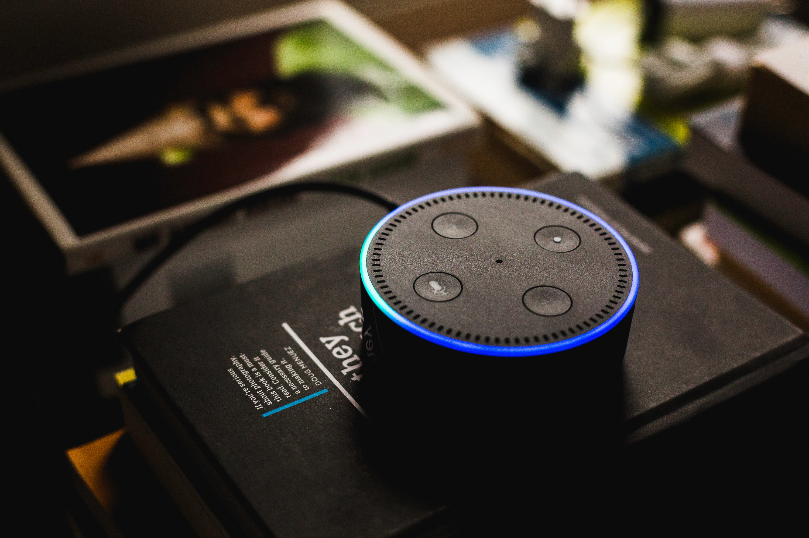

Amazon.com, Inc., doing business as Amazon (/ˈæməˌzɒn/), is an American electronic commerce and cloud computing company based in Seattle, Washington that was founded by Jeff Bezos on July 5, 1994. The tech giant is the largest Internet retailer in the world as measured by revenue and market capitalization, and second largest after Alibaba Group in terms of total sales.[3] The amazon.com website started as an online bookstore and later diversified to sell video downloads/streaming, MP3 downloads/streaming, audiobook downloads/streaming, software, video games, electronics, apparel, furniture, food, toys, and jewelry. The company also produces consumer electronics—Kindle e-readers, Fire tablets, Fire TV, and Echo—and is the world's largest provider of cloud infrastructure services (IaaS and PaaS).[4] Amazon also sells certain low-end products under its in-house brand AmazonBasics. 
Amazon has separate retail websites for the United States, the United Kingdom and Ireland, France, Canada, Germany, Italy, Spain, Netherlands, Australia, Brazil, Japan, China, India, and Mexico. In 2016, Dutch, Polish, and Turkish language versions of the German Amazon website were also launched.[5][6][7] Amazon also offers international shipping of some of its products to certain other countries.[8]
In 2015, Amazon surpassed Walmart as the most valuable retailer in the United States by market capitalization.[9] Amazon is the third most valuable public company in the world (behind only Apple and Alphabet), the largest Internet company by revenue in the world, and after Walmart, the second largest employer in the United States.[10] In 2017, Amazon acquired Whole Foods Market for $13.4 billion, which vastly increased Amazon's presence as a brick-and-mortar retailer.[11] The acquisition was interpreted by some as a direct attempt to challenge Walmart's traditional retail stores.[12]